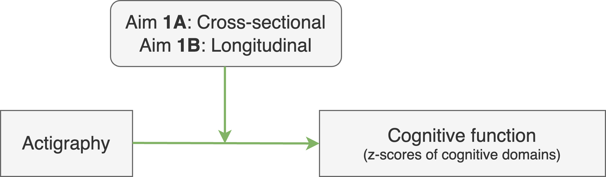
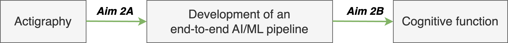

In order to substantiate the vision of OSCOFAI, the overall activities will target the following specific aims.
Aim 1 will use sleep-wake cycle data from 7 days of actigraphy recordings to derive traditional summary actigraphy measures and relate them with 1A) cognitive function (global composite z scores and individual composite domains z scores) at baseline in approximately 200 subjects aged >45 years from the Aiginition Longitudinal Biomarker Investigation Of Neurodegeneration (ALBION) cohort, and 1B) rates of cognitive change over a 2-year period.
Aim 2 will analyze the ALBION actigraphy and clinical assessment dataset using advanced signal processing and machine learning (ML) methods. In 2A) we will develop the end-to-end ML/AI pipeline (signal processing/feature engineering/machine learning) to analyze and extract knowledge from actigraphy time series datasets, and in 2B) we will use the developed ML/AI pipeline to process specifically the ALBION and identify combinations of actigraphy-related features and machine learning algorithms that synergistically can predict, with high sensitivity and specificity, cognitive impairment related measures.
Aim 3 will investigate potential mediating mechanisms in the relationship between 7-day sleep-wake actigraphy and cognition.
Such biological mechanisms will be approximated by a long list of biomarkers illustrated in the image.
We will use both traditional statistical 3A) and more recent ML/AI approaches 3B).
We will conclude by building an "AI Advisor" tool that combines
the best models to assist clinicians in stratifying patients regarding cognitive decline while also being able to explain how it arrived at its recommendations
(eXplainable AI approach, XAI). The clinician-expert may reject the recommendation, and the XAI tool will be able to assimilate their decision into its continual
learning scheme and keep improving itself as more patient data enter the study.